Искате да знаете повече за живота на Наков?
Е, дошли сте на правилното място!
Светлин Наков е роден през 1980 година. Това е негова снимка, когато е на около 6 месеца:
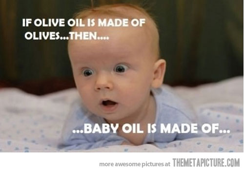
Той бил много енергично дете. Баща му обичал да го води на
футболни мачове, където тази енергия понякога се изразявала в лека форма на бунтарство:
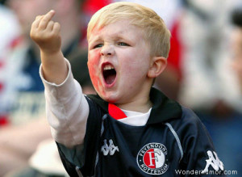
Все пак кой не би простил подобно нещо на
такъв сладур като Наков, когато е бил на 2-3 годинки. Като пораснал той пренасочил голямата
си енергия към нещо продуктивно - компютърното програмиране. Пише първата си компютърна програма
когато е в 4-ти клас. През училищните си години той се развивал в IT областта и работил
за различни фирми, пишейки програми на различни езици. Както и да е, когато наближил 12 клас, дошло
време да мисли дали иска да продължи образованието си в някой университет или не. Започнал да мисли за
различните професии, които би могъл да практикува. Първата професия дошла му на ум била доктор. Но после
си помислил: "ами какво ако в близкото бъдеще хората измислят лекарства за голяма част от болестите". Тогава
следната ужасяваща картинка му дошла пред очите:
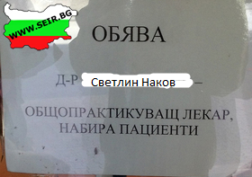
Следващата му идея била да стане механик, но следната картинка, която си представил не го
удовлетворила:
Но едно било сигурно - той не искал да бъде
нито фермер:
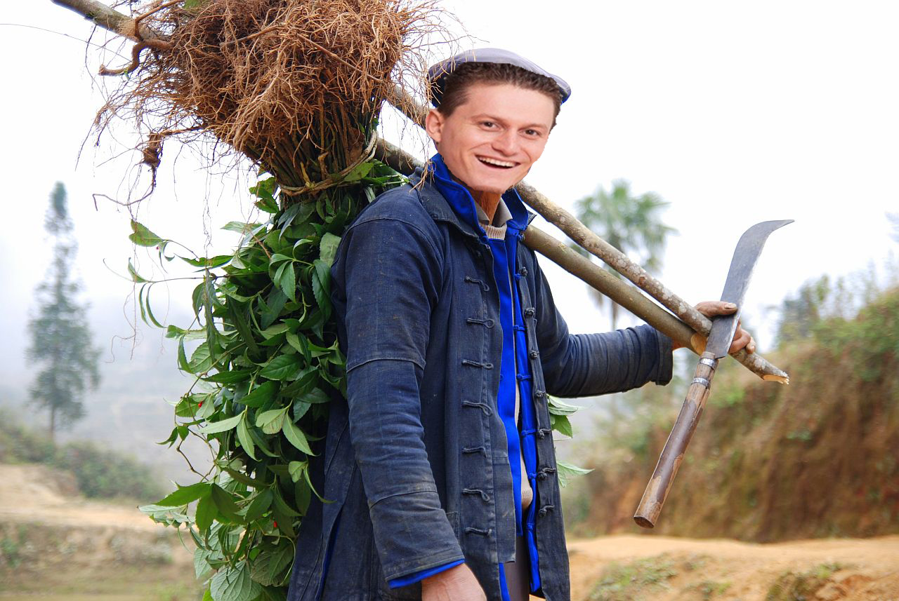
Нито общ работник:
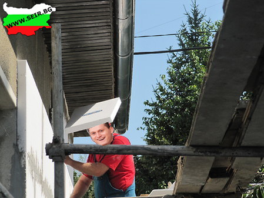
Тогава Наков си казал: "защо пък да не стана политик", но някак си не се виждал редом до Бат Бойко:
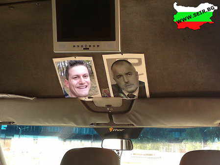
Най-накрая решил да продължи да се занимава с програмиране и
благодарение на успехите му на много състезания бил приет в Софийски Университет "Св.Кл.Охридски" без
да полага изпит. Избора на Наков не се основавал само върху интереса му към програмиране, а и върху
една мечта, която имал отдавна и тя била един ден да бъде толкова богат, че да си има собствен джет
и да лети, до която и да е дестинация, без да трябва да се съобразява с никакви цивилни полети, закъснения
на самолети и така нататък. Ето как в неговите мечти виждал своя частен джет паркиран точно в неговия квартал:
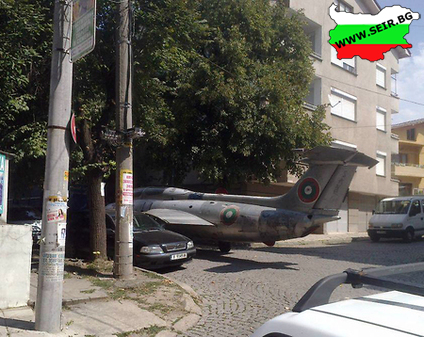
Не си представяйте обаче Наков като много примерен студент. Има доказателства,
че той е бил доста щур студент. Не ни вярвате? Вижте следващата снимка:
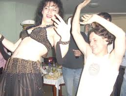
Както и да е, годините минавали и Светлин събрал пари да купи първата си кола.
Той обичал бързите скорости, но не успял да отреагира на огромна дупка в пътя, и запратил колата си в
нея. За щастие се отървал без драскотина. Ето и снимки от пътно транспортното произшествие:
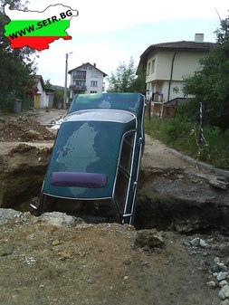 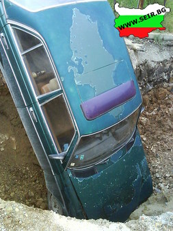
Така Наков останал без кола и се
наложило бързо да измисли нещо, защото мразил да пътува с градски транспорт. Ето какво сътворил
гениалният му ум:
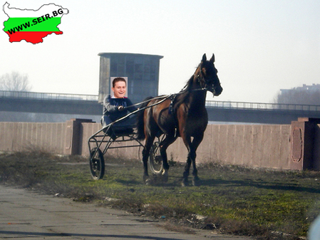 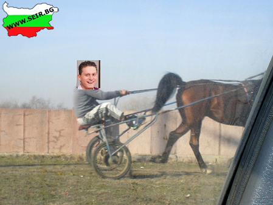
Отначало този вид транспорт допадал на Наков, поне така си личи от снимките, но както казахме по-рано, той
е любител на високите скорости и му трябвали повече конски сили. Следващата кола,
която си купил, не само била бърза и му вършила чудесна работа, ами и показвала засиленото
му либидо:
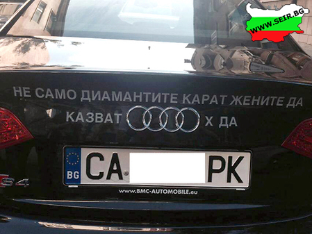
Наков има няколко хобита. Това
са риболов и планинско катерене. Ето снимка на Наков, който държи най-големия си улов
до сега:
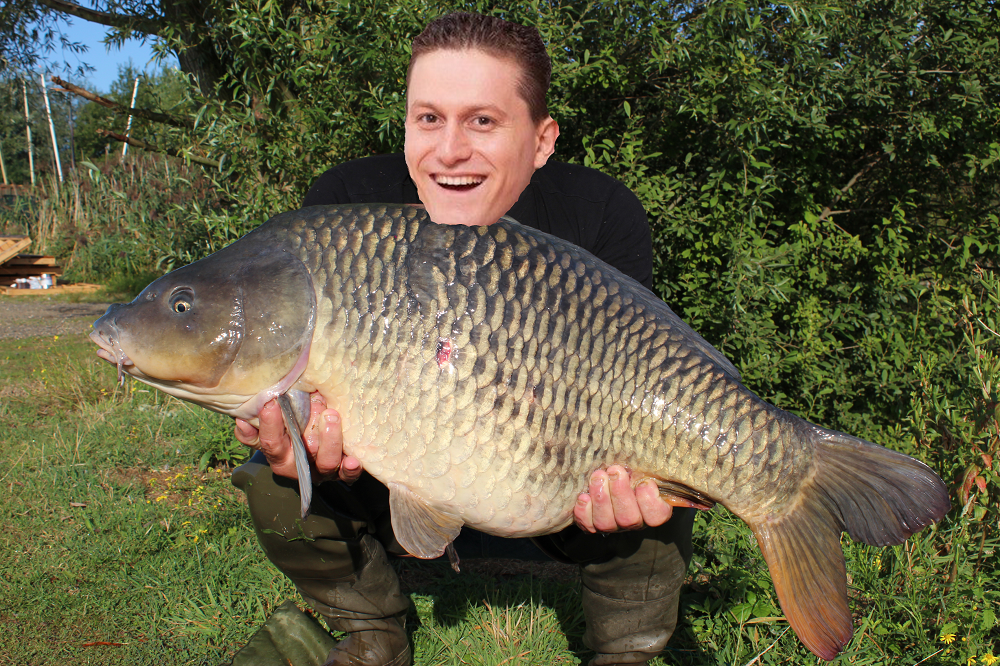